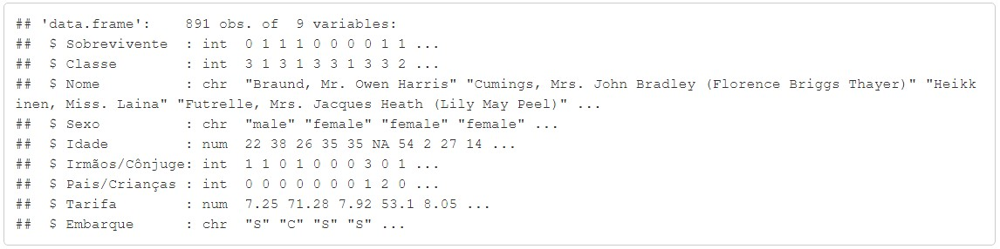
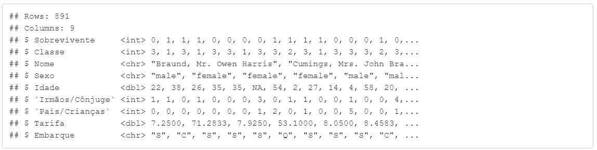
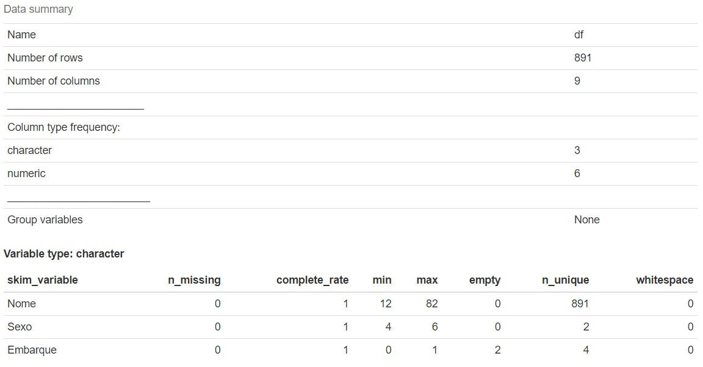
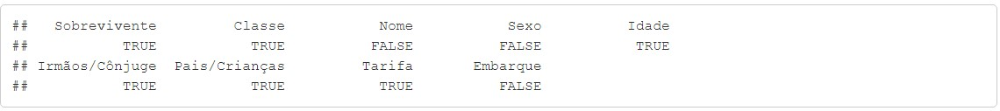
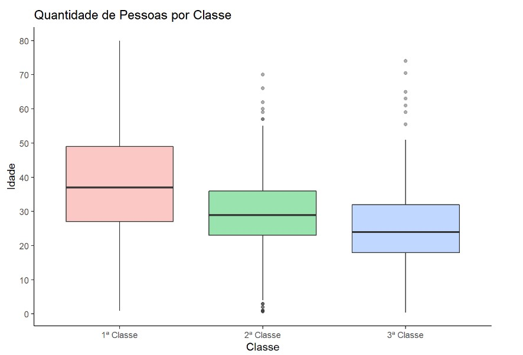
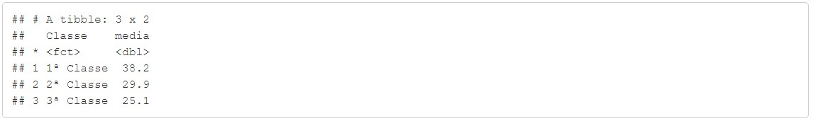
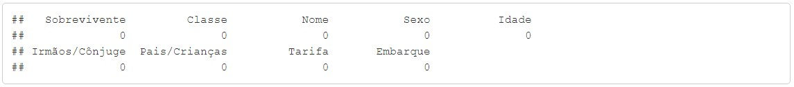
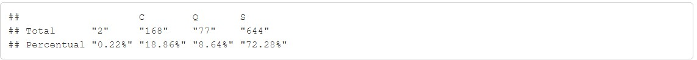

SQLDF
Aprenda a trabalhar com duas ferramentas ao mesmo tempo, podemos trabalhar com SQL dentro do RStudio.

Em estatística, a análise exploratória de dados (AED) é uma abordagem à análise de conjuntos de dados de modo a resumir suas características principais, frequentemente com métodos visuais. Um modelo estatístico pode ou não ser usado, mas primariamente a AED tem como objetivo observar o que os dados podem nos dizer além da modelagem formal ou do processo de teste de hipóteses. A análise exploratória de dados foi promovida pelo estatístico norte-americano John Tukey, que incentivava os estatísticos a explorar os dados e possivelmente formular hipóteses que poderiam levar a novas coletas de dados e experimentos. A AED é diferente da análise inicial de dados (AID), que se concentra mais estreitamente em verificar os pressupostos exigidos para ajuste de modelos e teste de hipóteses, além de manusear valores faltantes e fazer transformações de variáveis conforme necessário. A análise exploratória de dados abrange a AID.
A análise exploratória de dados emprega grande variedade de técnicas gráficas e quantitativas, visando maximizar a obtenção de informações ocultas na sua estrutura, descobrir variáveis importantes em suas tendências, detectar comportamentos anômalos do fenômeno, testar se são válidas as hipóteses assumidas, escolher modelos e determinar o número ótimo de variáveis.
Esse estudo estará utilização dados coletados e tratados pelo Kaggles, o qual disponibilizou esse dataset neste link. Com base nas informações dispostas nesse dataset, realizarei Insights acerca dos tripulantes e das circunstâncias que envolveram a tragédia. Vale lembrar que tal conjunto de dados não abriga informações de todos os passIdadeiros, mas sim de apenas 891.
Iremos utilizar a função read.csv().Abaixo demonstraremos como carregar um conjunto de dados,
lembrando que é preciso determinar alguns parâmetros, file ou path, caminho do diretório do arquivo
em seu computador, header indicar se o conjunto de dados tem ou não o nome das variáveis e como é um arquivo.
csv temos que demonstrar qual é o separador, nesse dataset é a vírgula.
Abaixo temos 02 exemplo, o primeiro,
baixar o arquivo, e salva em seu computador. Ou Caso preferir pode
utilizar a segunda opção que pega o arquivo direto do repositório do GitHub.
# Primeira Opção
df <- read.csv(file = 'C:/Users/Downloads/data_titanitc.csv')Ou
# Segunda Opção
df <- read.csv(file = 'https://raw.githubusercontent.com/rodolffoterra/rodolffoterra.github.io/main/dados/data_titanic.csv')
head(df)| PassengerId | Survived | Pclass | Name | Sex | Age | SibSp | Parch | Ticket | Fare | Cabin | Embarket |
|---|---|---|---|---|---|---|---|---|---|---|---|
| 1 | 0 | 3 | Braund, Mr. Owen Harris | male | 22 | 1 | 0 | A/5 21171 | 7.2500 | s | |
| 2 | 1 | 1 | Cumings, Mrs. John Bradley (Florence Briggs Thayer) | female | 38 | 1 | 0 | pc 17599 | 71.2833 | c85 | c |
| 3 | 1 | 3 | Heikkinen, Miss. Laina | female | 26 | 0 | 0 | STON/O2. 310128 | 7.9250 | s | |
| 4 | 1 | 1 | Futrelle, Mrs. Jacques Heath (Lily May Peel) | female | 35 | 1 | 0 | 113803 | 53.1000 | c123 | s |
| 5 | 0 | 3 | Allen, Mr. William Henry | male | 35 | 0 | 0 | 373450 | 8.0500 | s |
Acima você pode conferir as primeiras e últimas linhas do dataset. As informações podem causar certa confusão no primeiro momento, portanto, vamos esclarecer alguns pontos sobre eles, a começar pela remoção de colunas que não usaremos, como a “PassengerId”, “Ticket” e “Cabin”, que contém informações sobre o código de identidade do passIdadeiro, o número da sua cabine e do seu bilhete, respectivamente. Acredito que essas informações não são pertinentes ao estudo que faremos e sua permanência poderia causar perda de foco.
df <- df[,-c(1,9,11)]Caso a função acima possa parecer estranho, leia o material anterior: Data Frame.
Com as colunas removidas em nosso conjutno de dados, iremos renomear as colunas remanescentes.
colnames(df) <- c("Sobrevivente", "Classe","Nome","Sexo","Idade","Irmãos/Cônjuge","Pais/Crianças","Tarifa","Embarque")
Com as colunas devidamente renomeadas para um melhor entendimento, é hora de explicarmos o que cada um desses dados significa. Acompanhe abaixo cada coluna com seu respectivo significado:
A função abaixo mostra a quantidade de linhas (Observações), quantidade de colunas (variáveis) o nome, o type que foi classificado pelo r STudio cada variável e a composição das variáveis.
str(df)
glimpse(df)
Já a função skim(df) mostra com maiores detalhes cada variáveis, começamos a ter uma ideia de como
cada informação está organizada em nosso conjunto de dados.
skimr::skim(df)

Abaixo estamos querendo saber quais variáveis foram classificados como numéricas pelo próprio RStudio
colunas_numericas <- sapply(df, is.numeric)
colunas_numericas
missmap(df,
main = "Titanic - Mapa de Dados Missing",
col = c("black", "grey"),
legend = FALSE)
Podemos saber a quantidade de número missing por variável.
sapply(df, function(x) sum(is.na(x)))
Observar que a coluna idade possui muitos valores missing. Precisamos remover incluir valores no lugares desses espaços vazios. Para isto decidimos realizar a seguinte técnica. O grafico abaixo mostra um boxplot da faixa etária por classe.
df$Classe <- factor(df$Classe, labels = c("1ª Classe", "2ª Classe", "3ª Classe"))
ggplot(df, aes(Classe, Idade)) +
geom_boxplot(aes(group = Classe, fill = Classe), alpha = 0.4, show.legend = FALSE) +
scale_y_continuous(breaks = seq(min(0), max(80), by = 10)) +
theme_classic() +
labs(title = "Quantidade de Pessoas por Classe",
y = "Idade",
x = "Classe")
Podemos fazer um Group_by para visualizar o valor média por classe. Se você nuncaouviu falar em agrupamento, o artigo SQLDF, explica com maiores detalhes
df[complete.cases(df$Idade),] %>%
group_by(Classe) %>%
summarise(media = mean(Idade))
Podemos observar acima que a média da 1ª Classe é 38 anos, da 2ª Classe é 30 anos e da terceira Classe é 25 anos.


sapply(df, function(x) sum(is.na(x)))
Removemos os valores missing de idade. Na coluna "Embarque" temos 02 observações com nenhuma informação. Nesse caso, colocaremos nessa duas observações que está vazia, o valor “S”, pois representa 72 % do nosso conjunto de dados.
table <- rbind(table(df$Embarque),
paste0(round(prop.table(table(df$Embarque))*100, digit = 2),"%"))
rownames(table) <- c("Total","Percentual" )
table
O Titanic parou em três locais diferentes para que seus passegeiros pudessem embarcar: Cherbourg, Queenstown e Southampton, representados pelas letras C, Q e S no dataset, respectivamente.
df[c(62,830),9] <- "S"
df$Embarque <- factor(df$Embarque, labels = c(Cherbourg", "Queenstown","Southampton"))Na coluna Sovrevivente, colocaremos Naufragados no lugar de 0 e Sobrevivente no lugar de 1.
E na coluna Sexo no lugar, colocaremos Feminino e masculino para iniciarmos a análise exploratória de dados
df$Sobrevivente <- factor(df$Sobrevivente, labels = c("Naufragados","Sobrevivente"))
df$Sexo <- factor(df$Sexo, labels = c("Feminino", "Masculine"))Aprenda a trabalhar com duas ferramentas ao mesmo tempo, podemos trabalhar com SQL dentro do RStudio.
Um vetor em R é uma estrutura básica dentro da linguagem, que permite armazenar uma quantidade numérica ou string (letras ou caracteres), em um único objeto. O vetor possui apenas 01 única dimensão.

Matrizes é caracterizado como uma coleção de vetores, sendo todos do mesmo tipo (numérico ou caracteres) armazenados entre linhas e colunas.

Um data frame é semelhante a uma matriz mas as suas colunas têm nomes e podem conter dados de tipo diferente. Um data frame pode er visto como uma tabela de uma base de dados, em que cada linha corresponde a um registo (linha) da tabela.

19 / 03 / 2021

26 / 03 / 2021
 Nesse projete iremos analisar uma série temporal de uma empresa de locação de
bicicleta dos Estados. Unidos. O conjunto de dados é obtido na plataforma Kaggle. Nesse
conjunto de dados, iremos realizar uma análise exploratória em relação da demanda de locação
de bicicleta dos dias da semana, dia úteis, com dias de finais de semanas e feriados, qual a
correlação de locação de bicicleta com a temperatura e humidade do ar, se a velocidade do
vento interfere em relação a damanda de locação. Toda este projeto foi desenvolvido em
linguagem R.
Nesse projete iremos analisar uma série temporal de uma empresa de locação de
bicicleta dos Estados. Unidos. O conjunto de dados é obtido na plataforma Kaggle. Nesse
conjunto de dados, iremos realizar uma análise exploratória em relação da demanda de locação
de bicicleta dos dias da semana, dia úteis, com dias de finais de semanas e feriados, qual a
correlação de locação de bicicleta com a temperatura e humidade do ar, se a velocidade do
vento interfere em relação a damanda de locação. Toda este projeto foi desenvolvido em
linguagem R.